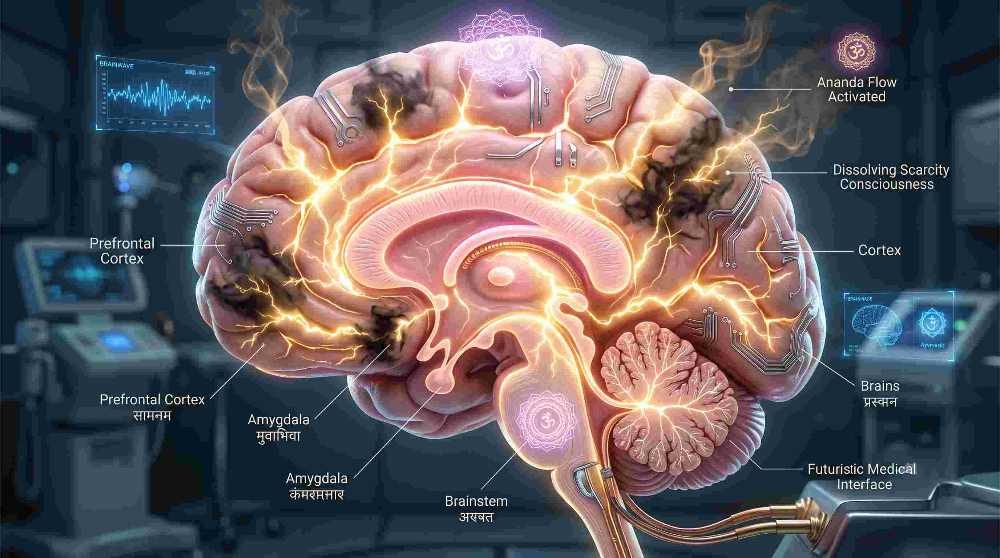
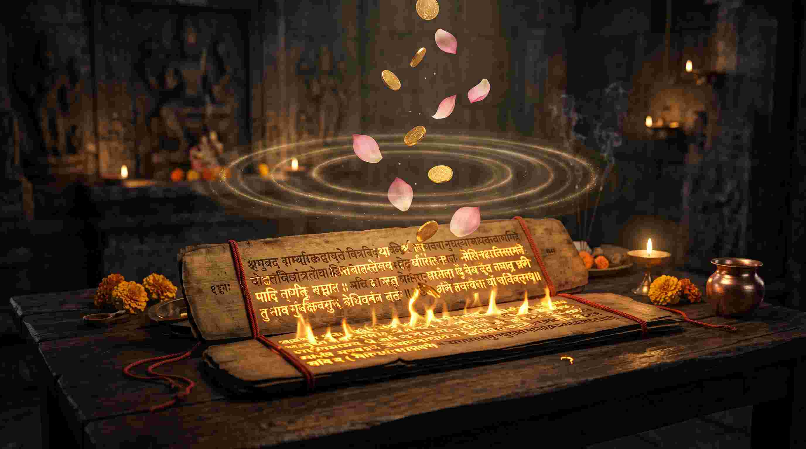

क्या आपने कभी सोचा है कि कुछ लोग इतनी आसानी से पैसा और सफलता कैसे आकर्षित कर लेते हैं, जबकि कुछ लोग जीवन भर कड़ी मेहनत करने के बावजूद आर्थिक तंगी से जूझते रहते हैं? क्या यह सिर्फ किस्मत है? आधुनिक क्वांटम भौतिकी (Quantum Physics) और न्यूरोलॉजी (Neurology) का कहना है कि यह किस्मत नहीं, बल्कि आपके मस्तिष्क की "फ्रीक्वेंसी" (Frequency) और "मानसिकता" (Mindset) का खेल है।
ऋग्वेद में वर्णित 'श्री सूक्त' (Shree Suktam) केवल देवी लक्ष्मी से धन मांगने की एक प्रार्थना नहीं है। एक मेडिकल छात्र और वैदिक ज्योतिषी के रूप में, मैं इस 37 श्लोकों वाले सम्पूर्ण सूक्त को मानव मस्तिष्क के 'दरिद्रता पैटर्न' (Scarcity Mindset) को नष्ट करके 'वैभव पैटर्न' (Abundance Mindset) में बदलने वाला सबसे शक्तिशाली ध्वन्यात्मक एल्गोरिदम (Acoustic Algorithm) मानता हूँ। आइए, इस महा-स्तोत्र का वैज्ञानिक चीरहरण करते हैं।
"दरिद्रता बाहर आपकी जेब में नहीं, आपके मस्तिष्क के 'अमिग्डाला' (Amygdala) में बैठे डर (Fear of lack) में होती है। श्री सूक्त उस डर को भस्म करके आपके भीतर असीमित ब्रह्मांडीय ऊर्जा को आकर्षित करने वाला चुंबक (Magnet) बना देता है।"

1. श्री सूक्त का न्यूरोलॉजिकल और इलेक्ट्रोमैग्नेटिक विज्ञान
श्री सूक्त में बार-बार 'हिरण्य' (सोना) और 'रजत' (चांदी) का जिक्र आता है। विज्ञान के अनुसार, सोना और चांदी इस ब्रह्मांड के सबसे उत्कृष्ट इलेक्ट्रोमैग्नेटिक कंडक्टर्स (Electromagnetic Conductors) हैं। जब आप श्री सूक्त के विशिष्ट संस्कृत अक्षरों का उच्चारण करते हैं, तो सिमेटिक्स (Cymatics) के अनुसार जो ध्वनि तरंगें पैदा होती हैं, वे आपके मस्तिष्क में डोपामाइन (Dopamine) और सेरोटोनिन (Serotonin) के स्तर को बढ़ा देती हैं।
इस स्तोत्र में 'अलक्ष्मी' (ज्येष्ठा - दरिद्रता की देवी) को भगाने की बात की गई है। मेडिकल भाषा में अलक्ष्मी वह कॉर्टिसोल (Cortisol) हार्मोन है जो आपको हर समय डरा कर रखता है कि "मेरे पास पैसे नहीं हैं।" श्री सूक्त का पाठ इस स्ट्रेस हार्मोन को खत्म कर देता है, जिससे आपका 'प्रीफ्रंटल कॉर्टेक्स' (निर्णय लेने वाला हिस्सा) सक्रिय हो जाता है।
2. वैभव प्रदाता श्री सूक्त: सम्पूर्ण 37 श्लोकों का पाठ एवं अर्थ
यहाँ महालक्ष्मी को प्रसन्न करने वाले सम्पूर्ण श्री सूक्त का पाठ दिया जा रहा है। इसमें ऋग्वेद की मूल 16 ऋचाओं के साथ-साथ अत्यंत शक्तिशाली फलश्रुति और लक्ष्मी प्रार्थनाएं भी शामिल हैं:

॥ वैभव प्रदाता श्री सूक्त ॥
हरिः ॐ हिरण्यवर्णां हरिणीं सुवर्णरजतस्रजाम्।
चन्द्रां हिरण्मयीं लक्ष्मीं जातवेदो म आवह॥1॥
अर्थ: हे अग्निदेव! सोने के समान रंग वाली, हिरणी के समान सुंदर, सोने और चांदी की मालाएं धारण करने वाली, चंद्रमा के समान प्रकाशमान और स्वर्णमयी भगवती लक्ष्मी का मेरे लिए आवाहन करें।
विज्ञान: 'हिरण्यवर्णां' ध्वनि आपके मस्तिष्क की फ्रीक्वेंसी को समृद्धि (Abundance) के इलेक्ट्रोमैग्नेटिक स्पेक्ट्रम के साथ ट्यून (Tune) करती है।
तां म आवह जातवेदो लक्ष्मीमनपगामिनीम्।
यस्यां हिरण्यं विन्देयं गामश्वं पुरुषानहम्॥2॥
अर्थ: हे अग्निदेव! आप उन कभी नष्ट न होने वाली (स्थिर) लक्ष्मी का मेरे लिए आवाहन करें, जिनकी कृपा से मैं स्वर्ण, गौ, अश्व और सेवकों को प्राप्त कर सकूँ।
अश्वपूर्वां رथमध्यां हस्तिनादप्रबोधिनीम्।
श्रियं देवीमुपह्वये श्रीर्मा देवी जुषताम्॥3॥
अर्थ: जिनके आगे घोड़े तथा बीच में रथ है, जो हाथियों की चिंघाड़ से जागृत होती हैं, उन श्री (लक्ष्मी) देवी का मैं आवाहन करता हूँ। वह देवी मुझ पर प्रसन्न हों।
कां सोस्मितां हिरण्यप्राकारामार्द्रां ज्वलन्तीं तृप्तां तर्पयन्तीम्।
पद्मे स्थितां पद्मवर्णां तामिहोपह्वये श्रियम्॥4॥
अर्थ: जो मंद मुस्कान वाली हैं, सोने के आवरण से घिरी हुई हैं, दयार्द्र हैं, स्वयं तृप्त होकर दूसरों को तृप्त करने वाली हैं, जो कमल पर विराजमान हैं—ऐसी लक्ष्मी देवी का मैं यहाँ आवाहन करता हूँ।
चन्द्रां प्रभासां यशसा ज्वलन्तीं श्रियं लोके देवजुष्टामुदाराम्।
तां पद्मिनीमीं शरणमहं प्रपद्येऽलक्ष्मीर्मे नश्यतां त्वां वृणे॥5॥
अर्थ: जो चंद्रमा के समान शीतल कांति वाली हैं, देवताओं द्वारा पूजित हैं। मैं उन कमलवासिनी की शरण में जाता हूँ। मेरी दरिद्रता (अलक्ष्मी) का नाश हो, मैं आपको चुनता हूँ।
आदित्यवर्णे तपसोऽधिजातो वनस्पतिस्तव वृक्षोऽथ बिल्वः।
तस्य फलानि तपसानुदन्तु मायान्तरायाश्च बाह्या अलक्ष्मीः॥6॥
अर्थ: हे देवी! आपकी तपस्या से 'बिल्व' (बेल) वृक्ष उत्पन्न हुआ। उस बिल्व के फल मेरे अज्ञान (माया) को दूर करें और मेरे भीतर-बाहर रहने वाली दरिद्रता का नाश करें।
उपैतु मां देवसखः कीर्तिश्च मणिना सह।
प्रादुर्भूतोऽस्मि राष्ट्रेऽस्मिन् कीर्तिमृद्धिं ददातु मे॥7॥
अर्थ: भगवान शिव के सखा कुबेर और मणिभद्र मेरी ओर आएं। मैं इस राष्ट्र में उत्पन्न हुआ हूँ, अतः मुझे कीर्ति और ऋद्धि (समृद्धि) प्रदान करें।
क्षुत्पिपासामलां ज्येष्ठामलक्ष्मीं नाशयाम्यहम्।
अभूतिमसमृद्धिं च सर्वां निर्णुद मे गृहात्॥8॥
अर्थ: भूख और प्यास से मलिन रहने वाली 'अलक्ष्मी' का मैं नाश करता हूँ। हे देवी! मेरे घर से अभाव और विपन्नता को हमेशा के लिए दूर कर दें।
विज्ञान: अलक्ष्मी 'स्ट्रेस' (Stress) का प्रतीक है। यह श्लोक 'डिनायल' का सबसे प्रबल घोष है जो नकारात्मक ऊर्जा को मस्तिष्क से ब्लॉक करता है।
गन्धद्वारां दुराधर्षां नित्यपुष्टां करीषिणीम्।
ईश्वरीं सर्वभूतानां तामिहोपह्वये श्रियम्॥9॥
अर्थ: जो सुगंध से प्राप्त होती हैं, जो नित्य धन-धान्य से परिपूर्ण हैं। सभी प्राणियों की ईश्वरी उन लक्ष्मी देवी का मैं आवाहन करता हूँ।
मनसः काममाकूतिं वाचः सत्यमशीमहि।
पशूनां रूपमन्नस्य मयि श्रीः श्रयतां यशः॥10॥
अर्थ: मेरी मन की कामनाएं, संकल्प और वाणी का सत्य मुझे प्राप्त हो। पशुओं का रूप (धन), अन्न की प्रचुरता और यश रूपी 'श्री' मेरे भीतर निवास करें।
कर्दमेन प्रजाभूता मयि सम्भव कर्दम।
श्रियं वासय मे कुले मातरं पद्ममालिनीम्॥11॥
अर्थ: हे कर्दम ऋषि! आपके द्वारा ही लक्ष्मी देवी उत्पन्न हुई हैं। आप मुझमें निवास करें और कमल की माला धारण करने वाली भगवती को मेरे कुल में स्थापित करें।
आपः सृजन्तु स्निग्धानि चिक्लीत वस मे गृहे।
नि च देवीं मातरं श्रियं वासय मे कुले॥12॥
अर्थ: जल देवता स्निग्ध पदार्थों की सृष्टि करें। हे लक्ष्मी पुत्र चिक्लीत! आप मेरे घर में निवास करें और अपनी माता 'श्री' देवी को भी मेरे कुल में निवास कराएं।
आर्द्रां पुष्करिणीं पुष्टिं पिङ्गलां पद्ममालिनीम्।
चन्द्रां हिरण्मयीं लक्ष्मीं जातवेदो म आवह॥13॥
अर्थ: हे अग्निदेव! आप पुष्करिणी, शरीर को पुष्ट करने वाली, पीत वर्णा, कमल की माला पहनने वाली, चंद्रमा के समान शीतल और स्वर्णमयी लक्ष्मी का आवाहन करें।
आर्द्रां यः करिणीं यष्टिं सुवर्णां हेममालिनीम्।
सूर्यां हिरण्मयीं लक्ष्मीं जातवेदो म आवह॥14॥
अर्थ: हे अग्निदेव! आप हाथियों द्वारा पूजित, सोने की माला धारण करने वाली, सूर्य के समान तेज वाली और स्वर्णमयी लक्ष्मी का मेरे लिए आवाहन करें।
तां म आवह जातवेदो लक्ष्मीमनपगामिनीम्।
यस्यां हिरण्यं प्रभूतं गावो दास्योऽश्वान् विन्देयं पुरुषानहम्॥15॥
अर्थ: हे अग्निदेव! आप मेरे लिए उन स्थिर लक्ष्मी का आवाहन करें, जिनकी कृपा से मैं प्रचुर सुवर्ण, गायें, दासियां, घोड़े और सेवकों को प्राप्त कर सकूँ।
यः शुचिः प्रयतो भूत्वा जुहुयादाज्यमन्वहम्।
सूक्तं पञ्चदशर्चं च श्रीकामः सततं जपेत्॥16॥
अर्थ: जो भी मनुष्य पवित्र होकर, इंद्रियों को वश में करके प्रतिदिन अग्नि में घी की आहुति देता है और धन की कामना से इस सूक्त का निरंतर जप करता है, वह असीमित वैभव पाता है।
पद्मानने पद्म ऊरू पद्माक्षी पद्मसम्भवे।
त्वं मां भजस्व पद्माक्षी येन सौख्यं लभाम्यहम्॥17॥
अर्थ: हे कमल के समान मुख वाली, कमल के समान जांघों वाली, कमल के समान नेत्रों वाली और कमल से उत्पन्न होने वाली देवी! आप मुझ पर कृपा करें जिससे मैं सुख प्राप्त करूँ।
अश्वदायि गोदायि धनदायि महाधने।
धनं मे जुषतां देवि सर्वकामांश्च देहि मे॥18॥
अर्थ: हे अश्व, गाय और धन प्रदान करने वाली महाधनमयी देवी! मेरे पास धन का भंडार हो और आप मेरी सभी कामनाओं को पूर्ण करें।
पुत्रपौत्र धनं धान्यं हस्त्यश्वादिगवे रथम्।
प्रजानां भवसि माता आयुष्मन्तं करोतु माम्॥19॥
अर्थ: आप मुझे पुत्र, पौत्र, धन, धान्य, हाथी, घोड़े और रथ प्रदान करें। आप समस्त प्रजा की माता हैं, कृपया मुझे दीर्घायु (लंबी उम्र) प्रदान करें।
धनमग्निर्धनं वायुर्धनं सूर्यो धनं वसुः।
धनमिन्द्रो बृहस्पतिर्वरुणं धनमश्नुते॥20॥
अर्थ: अग्नि धन है, वायु धन है, सूर्य धन है, वसु धन है, इंद्र धन हैं, बृहस्पति धन हैं और वरुण भी धन ही प्रदान करते हैं। देवी की कृपा से सब धन स्वरूप हो जाते हैं।
वैनतेय सोमं पिब सोमं पिबतु वृत्रहा।
सोमं धनस्य सोमिनो मह्यं ददातु सोमिनः॥21॥
अर्थ: गरुड़ सोमपान करें, वृत्रासुर को मारने वाले इंद्र सोमपान करें। सोम (चंद्रमा) और धन के स्वामी मुझे धन और समृद्धि प्रदान करें।
न क्रोधो न च मात्सर्य न लोभो नाशुभा मतिः।
भवन्ति कृतपुण्यानां भक्तानां श्रीसूक्तं जपेत्सदा॥22॥
अर्थ: जो पुण्यात्मा भक्त सदा श्री सूक्त का जप करते हैं, उनके हृदय में कभी क्रोध, ईर्ष्या (जलन), लोभ (लालच) और अशुभ विचार उत्पन्न नहीं होते।
विज्ञान: यह श्लोक न्यूरोलॉजिकली आपके एमिग्डाला को शांत करता है। जब ईर्ष्या और लोभ खत्म होते हैं, तभी वास्तविक 'एंडोर्फिन' और 'शांति' का जन्म होता है।
वर्षन्तु ते विभावरि दिवो अभ्रस्य विद्युतः।
रोहन्तु सर्वबीजान्यव ब्रह्म द्विषो जहि॥23॥
अर्थ: हे रात और दिन! आकाश से बादल और बिजलियां धन की वर्षा करें। सभी बीज अंकुरित हों और हे देवी, आप ब्रह्मद्वेषियों (नकारात्मक शक्तियों) का नाश करें।
पद्मप्रिये पद्मिनि पद्महस्ते पद्मालये पद्मदलायताक्षि।
विश्वप्रिये विष्णु मनोऽनुकूले त्वत्पादपद्मं मयि सन्निधत्स्व॥24॥
अर्थ: हे कमलप्रिया, कमल पर निवास करने वाली, हाथों में कमल धारण करने वाली, कमल के पत्तों के समान विशाल नेत्रों वाली, विश्व को प्रिय और भगवान विष्णु के मन के अनुकूल रहने वाली देवी! आप अपने चरण-कमल मेरे हृदय में स्थापित करें।
या सा पद्मासनस्था विपुलकटितटी पद्मपत्रायताक्षी।
गम्भीरा वर्तनाभिः स्तनभर नमिता शुभ्र वस्त्रोत्तरीया॥25॥
लक्ष्मीर्दिव्यैर्गजेन्द्रैर्मणिगणखचितैस्स्नापिता हेमकुम्भैः।
नित्यं सा पद्महस्ता मम वसतु गृहे सर्वमाङ्गल्ययुक्ता॥26॥
अर्थ: जो पद्मासन पर विराजमान हैं, जिनकी कटि (कमर) विपुल है, जिनके नेत्र कमल दल के समान हैं, जिनकी नाभि गहरी है, जो श्वेत वस्त्र धारण किए हुए हैं। जिन्हें दिव्य गजेंद्र (हाथी) स्वर्ण कलशों से स्नान करा रहे हैं—ऐसी हाथों में कमल धारण करने वाली सर्वमंगलमयी लक्ष्मी सदा मेरे घर में निवास करें।
लक्ष्मीं क्षीरसमुद्र राजतनयां श्रीरङ्गधामेश्वरीम्।
दासीभूतसमस्त देव वनितां लोकैक दीपांकुराम्॥27॥
श्रीमन्मन्दकटाक्षलब्ध विभव ब्रह्मेन्द्रगङ्गाधराम्।
त्वां त्रैलोक्य कुटुम्बिनीं सरसिजां वन्दे मुकुन्दप्रियाम्॥28॥
अर्थ: क्षीरसागर के राजा (समुद्र) की पुत्री, श्रीरंग धाम की ईश्वरी, जिनकी सेवा में समस्त देव-पत्नियां लगी हैं, जो लोकों को प्रकाशित करने वाली हैं। जिनकी एक मंद दृष्टि मात्र से ब्रह्मा, इंद्र और शिव ऐश्वर्य प्राप्त करते हैं, ऐसी त्रैलोक्य की माता और मुकुंद (विष्णु) की प्रिया को मैं वंदना करता हूँ।
सिद्धलक्ष्मीर्मोक्षलक्ष्मीर्जयलक्ष्मीस्सरस्वती।
श्रीलक्ष्मीर्वरलक्ष्मीश्च प्रसन्ना मम सर्वदा॥29॥
अर्थ: सिद्ध लक्ष्मी, मोक्ष लक्ष्मी, जय लक्ष्मी, सरस्वती, श्री लक्ष्मी और वर लक्ष्मी—ये सभी स्वरूप मुझ पर सदा प्रसन्न रहें।
वरांकुशौ पाशमभीतिमुद्रां करैर्वहन्तीं कमलासनस्थाम्।
बालार्क कोटि प्रतिभां त्रिणेत्रां भजेहमाद्यां जगदीश्वरीं त्वाम्॥30॥
अर्थ: जो अपने हाथों में वर मुद्रा, अंकुश, पाश और अभय मुद्रा धारण करती हैं, कमल के आसन पर विराजमान हैं, करोड़ों बाल-सूरज के समान चमकने वाली हैं, उन आदि जगदीश्वरी को मैं भजता हूँ।
सर्वमङ्गलमाङ्गल्ये शिवे सर्वार्थ साधिके।
शरण्ये त्र्यम्बके देवि नारायणि नमोऽस्तु ते॥31॥
अर्थ: हे सभी मंगलों में मंगलमयी! हे कल्याणमयी शिवे! सब पुरुषार्थों को सिद्ध करने वाली, शरणागत वत्सला तीन नेत्रों वाली नारायणी देवी! आपको नमस्कार है।
सरसिजनिलये सरोजहस्ते धवलतरांशुक गन्धमाल्यशोभे।
भगवति हरिवल्लभे मनोज्ञे त्रिभुवनभूतिकरि प्रसीद मह्यम्॥32॥
अर्थ: कमल में निवास करने वाली, हाथों में कमल धारण करने वाली, अत्यंत श्वेत वस्त्र और सुगंधित मालाओं से शोभित, भगवान हरि की प्रिया और तीनों लोकों को ऐश्वर्य देने वाली हे भगवती! मुझ पर प्रसन्न हों।
विष्णुपत्नीं क्षमां देवीं माधवीं माधवप्रियाम्।
विष्णोः प्रियसखीं देवीं नमाम्यच्युतवल्लभाम्॥33॥
अर्थ: भगवान विष्णु की पत्नी, क्षमा स्वरूप, माधव की प्रिया, विष्णु की सखी और भगवान अच्युत की वल्लभा देवी को मैं नमस्कार करता हूँ।
महालक्ष्मी च विद्महे विष्णुपत्नीं च धीमहि।
तन्नो लक्ष्मीः प्रचोदयात्॥34॥
अर्थ (लक्ष्मी गायत्री मंत्र): हम महालक्ष्मी को जानते हैं, भगवान विष्णु की पत्नी का हम ध्यान करते हैं। वह लक्ष्मी हमारी बुद्धि को सत्कार्यों और समृद्धि की ओर प्रेरित करें।
श्रीवर्चस्यमायुष्यमारोग्यमाविधात् पवमानं महियते।
धनं धान्यं पशुं बहुपुत्रलाभं शतसंवत्सरं दीर्घमायुः॥35॥
अर्थ: यह स्तोत्र श्री (संपत्ति), तेज, आयु और आरोग्य प्रदान करता है। इसे जपने से धन, धान्य, पशु, पुत्र-पौत्र आदि की प्राप्ति होती है और व्यक्ति सौ वर्ष (100 years) की दीर्घायु प्राप्त करता है।
ऋणरोगादिदारिद्र्यपापक्षुदपमृत्यवः।
भयशोकमनस्तापा नश्यन्तु मम सर्वदा॥36॥
अर्थ: मेरे जीवन से कर्ज (ऋण), रोग, दरिद्रता, पाप, भूख (अभाव), अकाल मृत्यु, भय, शोक और मन का ताप (मानसिक तनाव)—ये सभी हमेशा के लिए नष्ट हो जाएं।
य एवं वेद ॐ महादेव्यै च विद्महे विष्णुपत्नीं च धीमहि।
तन्नो लक्ष्मीः प्रचोदयात् ॐ शान्तिः शान्तिः शान्तिः॥37॥
अर्थ: जो ऐसा जानता है, वह महादेवी को प्राप्त करता है। हम विष्णु पत्नी का ध्यान करते हैं, वे हमारी रक्षा करें। ॐ शांति: शांति: शांति:।
3. श्री सूक्त और ज्योतिष: शुक्र (Venus) का जागरण
वैदिक ज्योतिष में शुक्र (Venus) धन, विलासिता (Luxury), वाहन, और सांसारिक सुखों का कारक है। जब किसी व्यक्ति की कुंडली में शुक्र नीच (कन्या राशि में) हो, 6ठे, 8वें या 12वें भाव में हो, या राहु से पीड़ित हो, तो व्यक्ति चाहे कितनी भी मेहनत कर ले, पैसा उसके पास टिकता नहीं है। बैंक बैलेंस हमेशा खाली रहता है।
श्री सूक्त का यह सम्पूर्ण पाठ शुक्र ग्रह को तुरंत 'जाग्रत' और 'बलिष्ठ' (Strong) कर देता है। यह आपके इलेक्ट्रोमैग्नेटिक 'ऑरा' (Aura) में चुंबकत्व (Magnetism) पैदा करता है, जिससे सही लोग, सही बिजनेस डील और सही अवसर अपने आप आपकी तरफ खिंचे चले आते हैं।
4. श्री सूक्त का 40-दिन का चमत्कारिक अनुष्ठान (Action Plan)
यदि आप भारी कर्ज (Debt) में हैं या बिजनेस में भयंकर नुकसान हुआ है, तो इस अनुष्ठान को आज़माएँ। यह मैंने अनगिनत कुंडलियों पर आजमाया हुआ प्रमाणित उपाय है:
- शुक्रवार से शुरुआत: इस अनुष्ठान को किसी भी शुक्ल पक्ष के शुक्रवार (Friday) या पूर्णिमा से शुरू करें।
- दिशा और समय: प्रातःकाल या गोधूलि वेला (Sunset) में, उत्तर (North - कुबेर की दिशा) या ईशान कोण (North-East) की ओर मुख करके बैठें।
- सामग्री: एक घी का दीपक जलाएं और माता लक्ष्मी (या श्री यंत्र) के सामने लाल या गुलाबी आसन पर बैठें। यदि संभव हो तो कमल गट्टे की माला रखें।
- पाठ की संख्या: प्रतिदिन कम से कम 1 बार (यदि समय हो तो 11 बार) श्री सूक्त के इन सम्पूर्ण 37 श्लोकों का सस्वर पाठ करें। 40 दिनों तक यह क्रम न तोड़ें।
- अंतिम दिन (हवन): 40वें दिन, गाय के शुद्ध घी और कमलगट्टे से इन श्लोकों के अंत में 'स्वाहा' लगाकर आहुतियां (Havan) दें।
निष्कर्ष: अपनी मानसिकता का 'सॉफ्टवेयर' बदलें
गरीबी केवल पैसों की कमी का नाम नहीं है; यह एक वाइब्रेशन (Frequency) है। जब तक आप उस वाइब्रेशन में रहेंगे, दुनिया का कोई भी बिजनेस आपको अमीर नहीं बना सकता। श्री सूक्त आपके मस्तिष्क और आपकी कुंडली के उस दरिद्रता वाले 'सॉफ्टवेयर' को डिलीट करके 'असीमित वैभव' का नया सॉफ्टवेयर इंस्टॉल कर देता है।
याद रखें, धन कमाना बुरा नहीं है। ऋग्वेद के हमारे ऋषियों ने भी गायों, सोने, घोड़ों और यश की खुलकर मांग की थी। एक आध्यात्मिक व्यक्ति भी पूरी तरह से समृद्ध हो सकता है। आज ही से श्री सूक्त का पाठ शुरू करें और अपने जीवन में आते हुए चमत्कार को स्वयं महसूस करें!